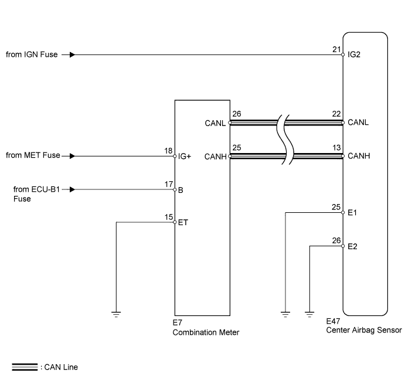
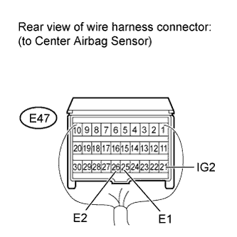
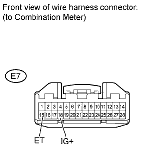

DTC B1662/45 Indicator Light Circuit Malfunction |
| DTC Code | DTC Detection Condition | Trouble Area |
| B1662/45 | When one of the following conditions is met:
|
|

| 1.CHECK CAN COMMUNICATION SYSTEM |
Check if a CAN communication DTC is output.
| Result | Proceed to |
| DTC is not output | A |
| DTC is output (for LHD) | B |
| DTC is output (for RHD) | C |
|
| ||||
|
| ||||
| A | |
| 2.CHECK BATTERY |
Measure the voltage of the battery.
|
| ||||
| OK | |
| 3.CHECK CONNECTORS |
Turn the engine switch off.
Disconnect the cable from the negative (-) battery terminal, and wait for at least 90 seconds.
Check that the connectors are properly connected to the center airbag sensor and combination meter.
|
| ||||
| OK | |
| 4.CHECK HARNESS AND CONNECTOR (SOURCE VOLTAGE OF CENTER AIRBAG SENSOR) |
 |
Disconnect the connectors from the center airbag sensor.
Connect the cable to the negative (-) battery terminal, and wait for at least 2 seconds.
Turn the engine switch on (IG).
Operate all the components of the electrical system (defogger, wipers, headlights, heater blower, etc.).
Measure the voltage according to the value(s) in the table below.
| Tester Connection | Switch Condition | Specified Condition |
| E47-21 (IG2) - E47-25 (E1) | Engine switch on (IG) | 11 to 14 V |
| E47-21 (IG2) - E47-26 (E2) | Engine switch on (IG) | 11 to 14 V |
|
| ||||
| OK | |
| 5.CHECK HARNESS AND CONNECTOR (SOURCE VOLTAGE OF COMBINATION METER) |
 |
Turn the engine switch off.
Disconnect the cable from the negative (-) battery terminal, and wait for at least 90 seconds.
Disconnect the E7 connector from the combination meter.
Connect the cable to the negative (-) battery terminal, and wait for at least 2 seconds.
Measure the voltage according to the value(s) in the table below.
| Tester Connection | Switch Condition | Specified Condition |
| E7-18 (IG+) - E7-15 (ET) | Engine switch on (IG) | 11 to 14 V |
|
| ||||
| OK | |
| 6.CHECK SRS WARNING LIGHT (SHORT TO GROUND) |
Turn the engine switch off.
Disconnect the cable from the negative (-) battery terminal, and wait for at least 90 seconds.
Connect the connector to the combination meter.
Connect the cable to the negative (-) battery terminal, and wait for at least 2 seconds.
Turn the engine switch on (IG).
Check the SRS warning light condition.
|
| ||||
| OK | ||
| ||